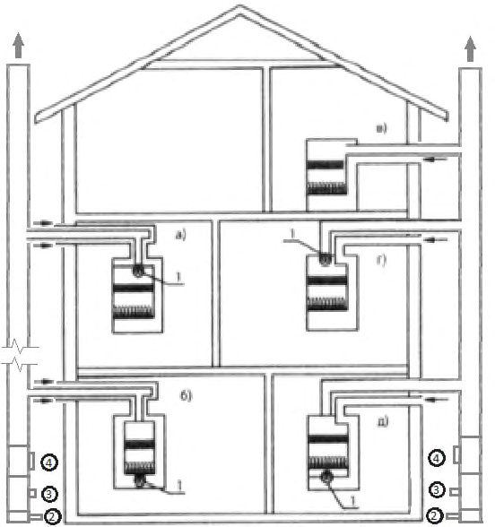
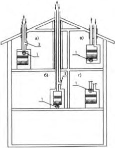
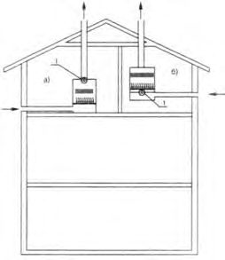
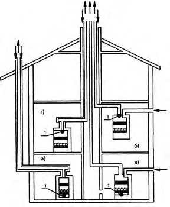
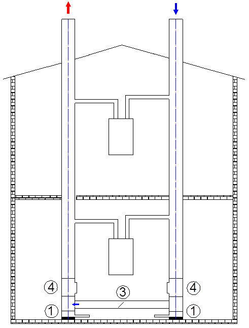
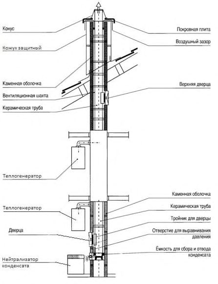

СП 280.1325800.2016 «Системы подачи воздуха на горение и удаление продуктов сгор»
О документе: разработчики, утверждение, регистрация, ключевые слова
СВОД ПРАВИЛ
СП 280.1325800.2016
Издание официальное
Москва 2016
1 ИСПОЛНИТЕЛЬ - Общество с ограниченной ответственностью «СанТехПроект»
- 2 ВНЕСЕН Техническим комитетом по стандартизации ТК 465 «Строительство»
- 3 ПОДГОТОВЛЕН к утверждению Департаментом градостроительной деятельности и архитектуры Министерства строительства и жилищно-коммунального хозяйства Российской Федерации (Минстрой России)
- 4 УТВЕРЖДЕН Приказом Министерства строительства и жилищнокоммунального хозяйства Российской Федерации от 16 декабря 2016 г. № 945/пр и введен в действие с 17 июня 2017 г.
- 5 ЗАРЕГИСТРИРОВАН Федеральным агентством по техническому регулированию и метрологии (Росстандарт)
В случае пересмотра (замены) или отмены настоящего свода правил соответствующее уведомление будет опубликовано в установленном порядке. Соответствующая информация, уведомление и тексты размещаются также в информационной системе общего пользования - на официальном сайте разработчика (Минстрой России) в сети Интернет
© Минстрой России, 2016
Настоящий нормативный документ не может быть полностью или частично воспроизведен, тиражирован и распространен в качестве официального издания на территории Российской Федерации без разрешения Минстроя России
- 1 Область применения ..........................................................................................................
- 2 Нормативные ссылки .........................................................................................................
- 3 Термины и определения ....................................................................................................
- 4 Общие положения ………………………………………………………………………..
- 5 Рекомендуемые схемы подачи воздуха и удаления продуктов сгорания.....................
- 5.1 Общие положения …………………………………………………………………..
- 5.2 Схемы забора воздуха и удаления продуктов сгорания для теплогенераторов типа В ..........................................................................................................................................
- 5.3 Схемы забора воздуха и удаления продуктов сгорания для теплогенераторов типа С ..........................................................................................................................................
- 6 Требования к системам подачи воздуха и удаления продуктов сгорания топлива ..... Приложение А (обязательное) Методика аэродинамического расчета системы подачи воздуха на горение и удаления продуктов сгорания ..............................
Приложение Б (справочное) Пример аэродинамического расчета ...................................
Библиография .........................................................................................................................
СП 280.1325800.2016
Дата введения - 2017-06-17
Введение
6 ВВЕДЕН ВПЕРВЫЕ
Настоящий свод правил разработан в соответствии с требованиями федеральных законов от 30 декабря 2009 г. № 384-ФЗ «Технический регламент о безопасности зданий и сооружений», от 22 июля 2008 г. № 123-ФЗ «Технический регламент о требованиях пожарной безопасности», от 23 ноября 2009 г. № 261-ФЗ «Об энергосбережении и о повышении энергетической эффективности и о внесении изменений в отдельные законодательные акты Российской Федерации».
Свод правил разработан ООО «СанТехПроект» (канд. тех. наук А.Я. Шарипов , инж. А.С. Богаченкова , инж. М.А. Шарипов , инж. Д.Ф. Каримов , инж. Н.А. Александрович , инж. И.Д. Монастыренко ) при участии ФГБОУ ВПО «МГСУ» (д -р техн. наук, проф. П.А. Хаванов ), ПКБ ООО «Теплоэнергетика» (канд. техн. наук Е.Л. Палей ).
| УДК______________ ОКС 91.140.20 |
|---|
| Ключевые слова: поквартирные системы теплоснабжения, теплогенераторы, газовое топливо, жилые здания, воздуховоды, дымоотводы, дымовые трубы, аэродинамические характеристики. |
1Область применения
2Нормативные ссылки
В настоящем своде правил использованы нормативные ссылки на следующие своды правил:
СП 60.13330.2012 «СНиП 41 -01 -2003 Отопление, вентиляция и кондиционирование воздуха»
СП 61.13330.2012 «СНиП 41 -03 -2003 Тепловая изоляция оборудования и трубопроводов»
Примечание - При пользовании настоящим сводом правил целесообразно проверить действие ссылочных документов в информационной системе общего пользования - на официальном сайте федерального органа исполнительной власти в сфере стандартизации в сети Интернет или по ежегодному информационному указателю «Национальные стандарты», который опубликован по состоянию на 1 января текущего года, и по выпускам ежемесячного информационного указателя «Национальные стандарты» за текущий год. Если заменен ссылочный документ, на который дана недатированная ссылка, то рекомендуется использовать действующую версию этого документа с учетом всех внесенных в данную версию изменений. Если заменен ссылочный документ, на который дана датированная ссылка, то рекомендуется использовать версию этого документа с указанным выше годом утверждения (принятия). Если после утверждения настоящего свода правил в ссылочный документ, на который дана датированная ссылка, внесено изменение, затрагивающее положение, на которое дана ссылка, то это положение рекомендуется применять без учета данного изменения. Если ссылочный документ отменен без замены, то положение, в котором дана ссылка на него, рекомендуется применять в части, не затрагивающей эту ссылку. Сведения о действии сводов правил целесообразно проверить в Федеральном информационном фонде и стандартов
Правила проектирования и устройства
Systems of air supply for combustion and removal of combustion products for gas-fired heat generators.
Design and development rules
3Термины и определения
В настоящем своде правил применены следующие термины с соответствующими определениями:
- 3.1воздуховод
- Канал или трубопровод прямоугольного или круглого сечения, служащий для подачи к теплогенератору воздуха для горения, забираемого снаружи здания.
- 3.2воздухоподвод
- Трубопровод круглого сечения, служащий для подачи воздуха от заборного устройства или от коллективного воздуховода до теплогенератора.
- 3.3дымоотвод
- Трубопровод для отвода дымовых газов от теплогенератора до дымохода.
- 3.4дымоход
- Вертикальный канал или трубопровод прямоугольного или круглого сечения для создания тяги и отвода продуктов сгорания (дымовых газов) от присоединенных к нему дымоотводов вертикально вверх в атмосферу.
- 3.5естественная тяга (самотяга)
- Разрежение, возникающее в дымоходе за счет разницы плотности наружного воздуха и продуктов сгорания по высоте и принуждающих воздух поступать в топку, а газообразные продукты сгорания двигаться по дымоотводам и дымоходам в атмосферу.
- 3.6искусственная тяга
- Разрежение, создаваемое дымососом или вентилятором.
- 3.7коаксиальный дымоход
- Конструктивное решение подачи воздуха и удаления продуктов сгорания совмещенным (соосным) устройством по принципу «труба в трубе».
- 3.8коаксиальный дымоотвод
- Конструктивное решение подачи воздуха и отвода продуктов сгорания совмещенным (соосным) устройством по принципу «труба в трубе».
- 3.9теплогенератор типа В
- Теплогенератор с открытой камерой сгорания, подключаемый к индивидуальному дымоходу. Воздух для горения забирается непосредственно из помещения, в котором установлен теплогенератор.
- 3.10теплогенератор типа С
- Теплогенератор с закрытой камерой сгорания, в котором отвод продуктов сгорания и подача воздуха для горения могут осуществляться за счет встроенного дутьевого вентилятора или дымососа. Система сжигания газового топлива (подача воздуха для горения, камера сгорания, отвод продуктов горения) в этих теплогенераторах газоплотна по отношению к помещениям.
4Общие положения
Использование для изготовления дымоходов и воздуховодов керамических, пластиковых и композитных материалов допускается только при наличии пожарного и санитарно-гигиенического сертификата.
5Рекомендуемые схемы подачи воздуха и удаления продуктов сгорания
5.1Общие положения
Системы подачи воздуха и удаления продуктов сгорания теплогенераторов с закрытыми камерами сгорания могут проектироваться по следующим схемам:
- с коаксиальным (совмещенным) устройством подачи воздуха и удаления продуктов сгорания;
- с раздельным устройством подачи воздуха и удаления продуктов сгорания встроенными или пристроенными коллективными воздуховодами и дымоходами;
- с индивидуальным воздуховодом, обеспечивающим забор воздуха через стену и подачу его индивидуально к каждому теплогенератору, и удалением дымовых газов коллективным дымоходом.
Устройство дымоотводов от каждого теплогенератора индивидуально через фасадную стену многоэтажного жилого здания запрещается.
При реконструкции системы теплоснабжения существующего малоэтажного жилого фонда и технической невозможности организации коллективных дымоходов допускается устройство индивидуальных дымоотводов при обязательной разработке мероприятий по обеспечению безопасности в соответствии с [1, статья 6, пункт 8].
5.2Схемы забора воздуха и удаления продуктов сгорания для теплогенераторов типа В
Схемы забора воздуха и удаление продуктов сгорания для теплогенераторов типа В [с атмосферными горелками (открытие камеры сгорания)] приведены на рисунке 5.1.

- а) -отвод продуктов сгорания наружу индивидуально, забор воздуха для горения из помещения; б) -забор воздуха для горения из помещения коаксиальным воздуховодом, отвод продуктов сгорания отдельным дымоотводом или общим дымоходом, проложенным в стене здания или пристроенным к ней
Рисунок 5.1 - Индивидуальное и коаксиальное исполнение
5.3Схемы забора воздуха и удаления продуктов сгорания для теплогенераторов типа С
5.3.1 Индивидуальное подключение к групповому дымоходу
Схема индивидуального подключения к групповому дымоходу приведена на рисунке 5.2

5.3.2 Индивидуальное подключение газовых теплогенераторов. Раздельное исполнение
На рисунке 5.3 показаны топочные устройства с системой отвода продуктов сгорания и подвода воздуха вертикально через крышу. Выпускные отверстия находятся в непосредственной близости друг от друга и в зоне одинакового давления.

- а) - коаксиальное исполнение с прерывателем тяги, с вентилятором за теплообменником;
- б) - коаксиальное исполнение с прерывателем тяги, с дутьевым вентилятором перед горелкой; в) - раздельное совмещенное исполнение с дутьевым вентилятором перед горелкой;
- г) - раздельное совмещенное исполнение
- с дутьевым вентилятором за теплообменником
Рисунок 5.3 - Индивидуальное подключение газовых теплогенераторов. Коаксиальное и совмещенное раздельное исполнение
5.3.3 Индивидуальное подключение газовых теплогенераторов. Раздельное исполнение
На рисунке 5.4 показаны топочные устройства с раздельными системами отвода продуктов сгорания и подвода воздуха. Устья этих систем находятся в зонах с различным давлением.

а) дымосос установлен на выходе из топки; б) вентилятор установлен до горелки; 1 - дымосос, дутьевой вентилятор
Рисунок 5.4 - Индивидуальное подключение газовых теплогенераторов. Раздельное исполнение
5.3.4 Индивидуальное подключение газовых теплогенераторов с размещением дымоходов в общей шахте
Схема индивидуального подключения газовых теплогенераторов с размещением дымоходов в общей шахте приведена на рисунке 5.5.

а), г) -коаксиальное исполнение; б), в) -раздельное исполнение; 1 -дутьевой вентилятор
Рисунок 5.5 - Индивидуальное подключение газовых теплогенераторов с размещением дымоходов в общей шахте
5.3.5 Групповое подключение газовых теплогенераторов
На рисунке 5.6 показаны топочные устройства с раздельными системами отвода продуктов сгорания и подвода воздуха, подключающимися к коллективным дымоходам и воздуховодам.

1 - слив конденсата; 3 - стабилизатор тяги; 4 - прочистка дымохода
Рисунок 5.6 - Групповое подключение газовых теплогенераторов с раздельными системами подачи воздуха и удаления продуктов сгорания
5.3.5.1 Групповое подключение газовых теплогенераторов по коаксиальной схеме
Коаксиальная схема группового подключения газовых теплогенераторов приведена на рисунке 5.7.
- 1 - слив конденсата; 3 - стабилизатор тяги; 4 - прочистка дымохода
Рисунок 5.7 - Групповое подключение газовых теплогенераторов к коаксиальному дымоходу
5.3.6 Подключение газовых теплогенераторов к керамическому коллективному коаксиальному дымоходу
Схема подключения газовых теплогенераторов к керамическому коллективному коаксиальному дымоходу приведена на рисунке 5.8.
1 - покровная плита; 2 - воздушный зазор; 3 - верхняя дверца; 4 - каменная оболочка; 5 - керамическая труба; 6 - тройник для дверцы; 7 - отверстие для выравнивания давления; 8 - емкость для сбора и отвода конденсата; 9 - нейтрализатор конденсата; 10 - дверца; 11 - нейтрализатор конденсата; 11, 12 - теплогенератор; 13 -защитный кожух; 14 - конус
Рисунок 5.8 - Подключение газовых теплогенераторов к керамическому коллективному коаксиальному дымоходу
6Требования к системам подачи воздуха и удаления продуктов сгорания топлива
Использование для изготовления дымоходов и воздуховодов керамики, пластмассы и других полимерных материалов допускается только при наличии пожарного и санитарно-гигиенического сертификатов.
В качестве материала для изготовления дымоотводов наиболее предпочтительна нержавеющая сталь.
Дымоотводы и подводящие воздуховоды на стене кухни допускается закрывать декоративными ограждениями из негорючих материалов, не снижающими требуемых пределов огнестойкости.
В случае использования дымоходов сборной конструкции из неметаллических материалов тройники соединений коллективного дымохода с дымоотводами должны быть обязательно изготовлены в заводских условиях и иметь сертификаты соответствия техническим условиям.
Конструкции заделки отверстий в местах проходов дымоходов через перекрытия (покрытие) жилого здания должны обеспечивать устойчивость конструкции дымоходов и возможность их смещений, вызванных температурными воздействиями.
СП 280.1325800.2016 дымохода, при этом угол отклонения от вертикали должен быть не более 30°.
При любом режиме работы теплогенератора в дымоходе по всей его высоте должно создаваться разрежение по отношению к смежным помещениям.
СП
280.1325800.2016 элементов дымохода и вводы дымоотвода должны быть устроены таким образом, чтобы конденсат свободно стекал вниз, не просачиваясь внутрь конструкции и не попадая в дымоотвод.
Патрубок подвода компенсационного воздуха должен быть защищен от попадания мусора и посторонних предметов решеткой с мелкой сеткой. При этом живое сечение решетки должно обеспечивать приток воздуха в объеме не менее 1,5 расхода воздуха при работе одного агрегата на номинальной мощности.
Рекомендуется рассчитывать толщину теплоизоляционного слоя исходя из условия обеспечения температуры стенки дымохода в рабочем режиме выше точки росы дымовых газов при самой низкой расчетной температуре наружного воздуха.
- не менее чем на 0,5 м выше конька или парапета кровли при расположении их (считая по горизонтали) не далее 1,5 м от конька или парапета кровли;
- в уровень с коньком или парапетом крыши, если они отстоят на расстоянии до 3 м от конька кровли или парапета;
- не ниже прямой, проведенной от конька или парапета вниз под углом 10° к горизонту, при расположении дымоходов на расстоянии более 3 м от конька или парапета кровли;
- не менее чем на 0,5 м выше границы зоны ветрового подпора, если вблизи дымохода находятся более высокие части здания, строения или деревья.
Во всех случаях высота дымохода над прилегающей частью кровли должна быть не менее 0,5 м, а для домов с совмещенной кровлей - не менее 2,0 м.
Устья кирпичных дымоходов при отсутствии колпака на высоту 0,2 м следует защищать от атмосферных осадков слоем цементного раствора.
Рисунок 6.1 - Высота дымоходов в зданиях
АПриложение А (обязательное). Методика аэродинамического расчета системы подачи воздуха на горение и удаление продуктов сгорания
А.1 Целями выполнения аэродинамического расчета являются проверка работоспособности системы подачи воздуха на горение и удаления продуктов сгорания и определение расчетных данных для конструирования системы. В основу аэродинамического расчета положены физические зависимости аэродинамических потоков гидравлических сопротивлений.
А.2 Проектирование систем подачи воздуха и удаления продуктов сгорания следует начинать с ознакомления с конструкцией и характеристиками теплогенератора, проверки рекомендуемых производителем условий его подключения к тракту удаления продуктов сгорания (дымоходам), в том числе максимальных длин дымоотводов и воздухоподводов, а также с определения гидравлических сопротивлений каждого элемента системы.
А.3 Конструкцией теплогенераторов предусмотрены две возможности соединения с системой «отвод продуктов сгорания - подача воздуха»: через коаксиальную трубу диаметром 60/100 мм или раздельными трубами диаметром 80/80 мм. Во входные отверстия дымоотводов вмонтированы патрубки для подключения устройства отбора проб для анализа уходящих газов.
А.4 В зависимости от мощности теплогенератора, мощности установленного вентилятора и принятой системы «отвода продуктов сгорания - подача воздуха» (коаксиальная или раздельная) в руководстве по эксплуатации каждого теплогенератора приведены рекомендуемые длины воздуховодов и дымоотводов. В тех случаях, когда проектные длины меньше рекомендуемых производителем, в комплекте с теплогенератором поставляются диафрагмы для увеличения сопротивления газовоздушного тракта. Таким образом, конструкцией и элементами теплогенератора обеспечивается подключение дымоотвода к коллективному дымоходу без избыточного давления, и определяется работа дымохода при самотяге. При этом нормальная работа дымохода определяется соблюдением обязательного условия - самотяга должна быть не менее чем на 20 % больше суммы расчетных сопротивлений дымохода. Аэродинамическим расчетом определяются расчетные значения самотяги и всех сопротивлений дымохода. Все сопротивления обычно разделяются на две группы:
- сопротивления трения, т. е. сопротивление при течении потока в прямом канале постоянного сечения:
- местные сопротивления, связанные с изменением формы или направления канала, каждое из которых считается условно
СП
280.1325800.2016
СП 280.1325800.2016 сосредоточенным в каком-либо одном сечении канала, т. е. не включает в себя сопротивление трения.
Диаметр устья дымохода d , м, определяют по формуле
где n - число теплогенераторов, подключенных к одному дымоходу;
V - объем дымовых газов, образующихся при сгорании топлива, на выходе из дымохода от одного теплогенератора, м³ /с;
W - скорость дымовых газов на выходе из устья дымохода, м/с.
Объем дымовых газов V , м³ /с, образующихся при сгорании топлива [3], определяют по формуле
где В - расход топлива, м³ /ч;
V г - теоретический объем продуктов сгорания, образующихся при полном сгорании теоретически необходимого количества воздуха при сжигании 1 м³ природного газа, м³ /м³ ; t ух - температура уходящих газов за теплогенератором, ° С.
Объем дымовых газов, м³ /м³ , образующихся при полном сгорании топлива, определяют по формуле
где 𝑉RO2 - объем трехатомных газов, м³ /м³ ;
𝑉 0 N2 - теоретический объем азота, м³ /м³ ;
𝑉H2O - теоретический объем водяных паров, м³ /м³ ; α - коэффициент избытка воздуха, принимают по паспортным данным теплогенератора;
V 0 - теоретический объем воздуха, м³ /м³ .
Объем воздуха и продуктов сгорания газообразных топлив, м³ /м³ , при α = 1,0 ° С и 760 мм рт. ст. принимают по таблицам характеристик газообразного топлива.
𝑉H2O рассчитывают по формуле
𝑉 H2O
А.5 Расчетными режимами являются режимы работы всех теплогенераторов, подключенных к данному дымоходу, с максимальной теплопроизводительностью в зимнее и летнее время. Полученные расчетные данные проверяют на наиболее неблагоприятный режим работу одного наименьшего по теплопроизводительности теплогенератора летом при максимальной температуре самого жаркого месяца.
Охлаждение дымовых газов в дымоходе не учитывают.
Самотягу коллективных дымоходов, Па определяют по формуле
где Н - высота дымохода, м; g - ускорение свободного падения, g = 9,81 м/с 2 ; ρ - плотность наружного воздуха при 760 мм рт. ст. и температуре наружного воздуха в расчетный период, кгс·с 2 /м 4 ; р - абсолютное среднее давление газов на участке, Па; ρ0 - плотность дымовых газов при 760 мм рт. ст. и 0 ° С, кгс·с 2 /м 4 ; ϑ - средняя температура газового потока на данном участке, ° С.
Сопротивление трения дымоходов, Па, рассчитывают по формуле
∆
где λ -коэффициент сопротивления трения, принимаемый по характеристикам материала, из которого изготовлен дымоход;
L - длина участка, м;
W - скорость дымовых газов в дымоходе, м/с; d - диаметр дымохода, м; ρг - плотность газов, кгс·с 2 /м 4 .
Местные сопротивления дымохода, Па, рассчитывают по формуле
∆
где ∑ξ - сумма коэффициентов местного сопротивления.
Возможность возникновения избыточного давления проверяют по критерию R 0 :
где λ - коэффициент сопротивления трения; h д - динамическое давление, Па. h
Δρ - разность плотностей окружающего воздуха и дымовых газов.
Если R 0 ≤ 1, то весь дымоход находится под разрежением. Общее сопротивление дымохода, Па, составляет
А.6 Правильность принятых решений по организации системы подачи воздуха на горение и удаления продуктов сгорания для теплогенераторов на газовом топливе, расчета необходимого диаметра воздуховода и скорости выхода дымовых газов из устья дымохода подтверждается следующим обязательным условием:
Принятую высоту дымовой трубы проверяют на предмет рассеивания вредных выбросов в приземном слое [3].
Приведенный алгоритм расчетов может служить основой создания программного обеспечения для производства, аэродинамического расчета и конструирования систем подачи воздуха и удаления продуктов сгорания.
В приложении Б приведен пример аэродинамического расчета выбора высоты и диаметров дымовой трубы многоквартирного жилого дома, состоящего из 9-этажных секций и 10-этажной секции.
БПриложение Б (справочное). Пример аэродинамического расчета
Системы дымоудаления и воздухоподачи
Б.1Исходные данные
В настоящем приложении рассмотрена проектная документация на строительство разноэтажного (9-10 этажей) 3-секционного жилого дома серии 121М-2003С.
В соответствии с заданием заказчика для теплоснабжения систем отопления, вентиляции и горячего водоснабжения квартир приняты разные типы теплогенераторов:
- для однокомнатных и двухкомнатных квартир - 2-контурные теплогенераторы тепловой мощностью 23 кВт;
- для трехкомнатных квартир и для отопления помещений консьержей и лестничных клеток - 2-контурные теплогенераторы тепловой мощностью 28 кВт.
Проектом принята раздельная система подачи воздуха индивидуальными воздуховодами, обеспечивающими забор воздуха через фасадную стену и подачу его индивидуально к каждому теплогенератору и отвод дымовых газов коллективным дымоходом.
В соответствии с архитектурно-планировочными решениями:
- дом состоит из трех секций - левой, средней и правой;
- левая и средняя секции - 9-этажные, правая секция 10-этажная;
- размещение квартир в секциях и поэтажно различное.
Для жилых квартир предусмотрено по четыре коллективных дымохода (по числу квартир на каждом типовом этаже) в каждой секции. К каждому дымоходу подключаются дымоотводы, указанные в перечислениях а) - в).
- а) Секция левая 9-этажная:
- 1) дымоход № 1: девять дымоотводов от теплогенераторов, установленных в кухнях двухкомнатных квартир;
- 2) дымоход № 2: девять дымоотводов по одному от теплогенераторов, установленных в кухне каждой трехкомнатной квартиры;
- 3) дымоход № 3: девять дымоотводов по одному от теплогенераторов, установленных в кухне каждой двухкомнатной квартиры;
- 4) дымоход № 4: 1-й этаж - один дымоотвод от теплогенератора, установленного в кухне трехкомнатной квартиры, и один дымоотвод от теплогенератора, установленного в помещении консьержа; 2-й-9-й этажи восемь дымоотводов по одному дымоотводу от теплогенераторов, установленных в кухнях каждой однокомнатной квартиры.
- б) Секция средняя 9- этажная:
- 1) дымоход № 5: 1-й этаж - один дымоотвод от теплогенератора, установленного в кухне однокомнатной квартиры; 2-й-9-й этажи - восемь дымоотводов по одному дымоотводу от теплогенераторов, установленных в кухнях каждой двухкомнатной квартиры;
2) дымоход № 6: девять дымоотводов по одному от теплогенераторов, установленных в кухне каждой трехкомнатной квартиры; 3) дымоход № 7: 1-й этаж - один дымоотвод от теплогенератора, установленного в кухне трехкомнатной квартиры; 2-й-9-й этажи - восемь дымоотводов по одному дымоотводу от теплогенераторов, установленных в кухнях каждой двухкомнатной квартиры; 4) дымоход № 8: 1-й этаж - один дымоотвод от теплогенератора, установленного в помещении консьержа и предназначенного для теплоснабжения помещения консьержа и лестничных клеток секции; 2-й-9й этажи - восемь дымоотводов по одному дымоотводу от теплогенераторов, установленных в кухнях каждой однокомнатной квартиры. в) Секция правая 10- этажная: 1) дымоход № 9: 1-й этаж - один дымоотвод от теплогенератора, установленного в кухне однокомнатной квартиры; 2-й-10-й этажи девять дымоотводов по одному дымоотводу от теплогенераторов, установленных в кухнях каждой двухкомнатной квартиры; 2) дымоход № 10: один дымоотвод от теплогенератора, установленного в кухне двухкомнатной квартиры; 2-й-10-й этажи - девять дымоотводов по одному дымоотводу от теплогенераторов, установленных в кухнях каждой трехкомнатной квартиры; 3) дымоход № 11: 10 дымоотводов по одному дымоотводу от теплогенераторов, установленных в кухнях каждой двухкомнатной квартиры; 4) дымоход № 12: 1-й этаж - один дымоотвод от теплогенератора, установленного в помещении консьержа и предназначенного для теплоснабжения помещения консьержа и лестничных клеток секции; 2-й10-й этажи - девять дымоотводов по одному дымоотводу от теплогенераторов, установленных в кухнях каждой однокомнатной квартиры. Изложенные обстоятельства привели к необходимости работы дымоходов в разных условиях, указанных в таблице Б.1. Расчеты выполнены исходя из условий работы всех теплогенераторов на один дымоход в зимнем режиме, при работе всех теплогенераторов на один дымоход в летнем режиме и проверены на самые неблагоприятные условия: работа одного наименьшего по производительности теплогенератора при максимальной температуре воздуха (см. таблицу Б.8). данные по потерям давления на трение и местные потери различаются на
Проведенные расчеты показывают, что конструктивно дымоходы обеспечивают необходимую тягу во всех режимах. При этом расчетные десятые и сотые доли миллиметра.
Исходя из этого для дымоходов № 9 и № 11 в случае необходимости можно воспользоваться данными расчетов таблицы Б.4.
Каждый дымоход расположен в шахте, встроенной в лоджии.
Нижняя часть всех дымоходов размещена в лоджии первого этажа. Отметка верха всех дымоходов левой и средней секции +31 м, правой секции + 33 м.
В нижней части каждого дымохода должна быть предусмотрена камера высотой не менее 0,5 м. Камера должна иметь проем для обеспечения осмотра, прочистки дымохода, сбора и отвода конденсата в случае его образования.
Для выравнивания тяги в нижней части дымохода должно быть предусмотрено устройство регулярного подсоса воздуха. Патрубок подсоса воздуха должен быть защищен от попадания мусора и посторонних предметов.
Суммарная длина дымоотвода и воздуховода от места забора воздуха не должна превышать значений, рекомендованных предприятиемизготовителем.
Конструкцию дымоходов, дымоотводов и воздуховодов следует предусматривать сборную из металлических материалов. Соединение деталей должно осуществляться соединительными крепежными элементами в соответствии с рекомендациями предприятия-изготовителя. Для уплотнения соединений допускается использование негорючих герметизирующих материалов.
Дымоотводы следует прокладывать с уклоном не менее 3 % от теплогенератора и предусматривать устройства с заглушкой для отбора проб для проверки качества горения. Как правило, указанные устройства устанавливают на сборном коробе дымовых газов теплогенератора и поставляют вместе с теплогенератором.
Для обеспечения надежности, долговечности и технологичности коллективные дымоходы, их элементы, а также дымоотводы и воздуховоды теплогенераторов следует принимать металлическими, двухслойными с теплоизоляционным слоем.
Б.2Аэродинамический расчет дымоходов поквартирных систем теплоснабжения
Б.2.1 Расчет диаметров дымоходов
Выход дымовых газов при сгорании топлива, м³ /с, от одного теплогенератора определяют по формуле
- расход топлива, подаваемого к теплогенератору, м³ /ч; V г - выход продуктов сгорания на 1 м³ природного газа, м³ /м³ ; t ух - температура уходящих газов за теплогенератором, t ух = 120 º С. где В
Для газопровода «Средняя Азия - Центр» принимают [3]:
Расчетные данные по объему выходящих дымовых газов от каждого коллективного дымохода указаны в таблице Б.1.
Расчетными режимами являются режимы работы всех подключенных к данному дымоходу теплогенераторов с максимальной производительностью в зимнее и летнее время. Расчетные данные проверяют на наиболее неблагопрятный режим - работу одного наименьшего по теплопроизводительности теплогенератора летом при максимальной температуре самого жаркого месяца.
Охлаждение дымовых газов в дымоходе не учитывается.
По данным производителя расход природного газа на один теплогенератор составляет:
- двухконтурный тепловой мощностью 23 кВт - 2,65 м³ /ч;
- двухконтурный тепловой мощностью 28 кВт - 3,25 м³ /ч.
Выход дымовых газов от одного теплогенератора составляет:
- мощностью 23 кВт V = 2,65 ∙ 15,144(273 +120) / 273∙3600 = 0,016 м³ /ч;
- мощностью 28 кВт V = 3,25 ∙ 15,144(273 + 120) / 273 ∙ 3600 = 0,0197 м³ /ч.
Диаметр устья дымохода d
, м, определяют по формуле
где n - число теплогенераторов, подключенных к одному дымоходу;
𝑉 - объем дымовых газов на выходе из дымохода, м³ /с;
W - скорость дымовых газов на выходе из устья дымохода, м/с.
Исходя из условий задувания принимают W = 6 м/с.
Расчетные значения диаметров устья для каждого дымохода указаны в таблице Б.1.
Таблица Б.1- Расчетные исходные данные
| № дымохода | Число и мощность присоединяемых теплогенераторов | Общий объем дымовых газов на выходе из устья дымохода, м³ /с | Диаметр устья дымо- хода, мм | Расчетная скорость на выходе из дымохода, м/с, при d = 200 | Расчетная скорость на выходе из дымохода, м/с, при d = 200 |
|---|---|---|---|---|---|
| № дымохода | Число и мощность присоединяемых теплогенераторов | Общий объем дымовых газов на выходе из устья дымохода, м³ /с | Диаметр устья дымо- хода, мм | при работе всех теплоге- нераторов | при работе одного теплогенерат ора |
| 1 | 9 2-конт. 23 кВт | 0,144 | 174 | 4,58 | 0,5 |
| 2 | 9 2-конт. 28 кВт | 0,177 | 194 | 5,64 | 0,63 |
| 3 | 9 2-конт. 23 кВт | 0,144 | 177 | 4,70 | 0,5 |
| 4 | 9 2-конт. 23 кВт+ 1 2-конт. 28 кВт | 0,1674 | 188 | 5,33 | 0,5 |
| 5 | 9 2-конт. 23 кВт | 0,144 | 174 | 4,58 | 0,5 |
| 6 | 9 2-конт. 28 кВт | 0.177 | 194 | 5,64 | 0,63 |
| 7 | 8 2-конт. 23 кВт + 1 2-конт. 28 кВт | 0,1477 | 177 | 4,70 | 0,5 |
| 8 | 9 2-конт. 23 кВт + 1 2-конт. 28 кВт | 0,1477 | 177 | 4,70 | 0,5 |
| 9 | 10 2-конт. 23 кВт | 0,16 | 184 | 5,09 | 0,5 |
| 10 | 1 2-конт. 23 кВт + 9 2-конт. 28 кВт | 0,193 | 200 | 6,14 | 0,5 |
| 11 | 10 2-конт. 23 кВт | 0,160 | 184 | 5,09 | 0,5 |
| 12 | 9 2-конт. 23 кВт + 1 2-конт. 28 кВт | 0,164 | 186 | 3,22 | 0,5 |
Принимают ближайший стандартный диаметр дымоходов 200 мм.
Б.3Аэродинамический расчет
Самотягу коллективных дымоходов, Па, определяют по следующей формуле
где Н - высота дымохода, м; g - ускорение свободного падения, g = 9,81 м/с 2 ; р - абсолютное среднее давление газов на участке, Па; ρ0 - плотность дымовых газов, кгс·с 2 /м 4 , при 760 мм рт. ст. и 0 ° С ρ0 = 0,132 кгс·с 2 /м 4 ; ρг - плотность дымовых газов при 760 мм рт. ст. и температуре
120 ° С, кгс·с 2 /м 4 :
ϑ - средняя температура газового потока на данном участке, ° С, ϑ = 120 ° С; t з - средняя температура наружного воздуха наиболее холодного месяца - минус 36 ° С; t л - средняя температура наружного воздуха наиболее теплого месяца - плюс 23,6 ° С;
0,123 - плотность наружного воздуха при 760 мм рт. ст. и температуре 20 ° С.
Плотность воздуха, кгс·с 2 /м 4 , при наружной температуре минус 36 ° С
Плотность воздуха при наружной температуре плюс 37 ° С
Высота дымоходов левой и средней секций - 31 м и 29 м, правой секции - 33,5 м и 31,5 м.
Сопротивление трения дымоходов, Па , определяют по формуле
где λ - коэффициент сопротивления трения; λ = 0,02;
L - длина участка, м;
W 2 сб - скорость дымовых газов в дымоходе, м/с; d - диаметр дымохода, м; ρг - плотность газов, кгс·с 2 /м 4 .
Местные сопротивления дымохода, Па, определяют по формуле
Δ
где ∑ξ - сумма коэффициентов местного сопротивления: ξ = 0,25 сопротивления тройника 90 ° ; ξ = 1,0 сопротивлениz выхода из дымохода.
Возможность возникновения избыточного давления проверяют по критерию R 0 :
.
Общее сопротивление дымохода, Па, составляет
Правильность принятых решений по организации системы дымоудаления, расчету необходимого диаметра воздуховода и скорости выхода дымовых газов из устья дымохода подтверждается следующими обязательными условиями:
Расчетные данные аэродинамических расчетов дымоходов приведены в таблицах Б.2-Б.9.
Таблица Б.2
| Коллективные дымоходы №1,№3,№5 | Коллективные дымоходы №1,№3,№5 | Коллективные дымоходы №1,№3,№5 | Коллективные дымоходы №1,№3,№5 | Коллективные дымоходы №1,№3,№5 | Коллективные дымоходы №1,№3,№5 | Коллективные дымоходы №1,№3,№5 | Коллективные дымоходы №1,№3,№5 | Коллективные дымоходы №1,№3,№5 | Коллективные дымоходы №1,№3,№5 |
|---|---|---|---|---|---|---|---|---|---|
| Участок | Отметка участка | L , м | V г , м³ /с | Холодный период (в работе все теплогенераторы) | Холодный период (в работе все теплогенераторы) | Холодный период (в работе все теплогенераторы) | Холодный период (в работе все теплогенераторы) | Холодный период (в работе все теплогенераторы) | Холодный период (в работе все теплогенераторы) |
| Участок | Отметка участка | L , м | V г , м³ /с | W , м/с | h с , Па | ∆ h тр , Па | ∆ h м, Па | 1,2∑∆ h , Па | R 0 |
| 1-го этажа | 1,90 | 3,25 | 0,016 | 0,5 | Н = 3,25 19,5 | 0,036 | 0,14 | 0,21 | 0,0016 |
| 2-го этажа | 4,60 | 2,70 | 0,032 | 1,0 | Н = 5,95 35,7 | 0,126 | 0,56 | 0,82 | 0,00656 |
| 3-го этажа | 7,30 | 2,70 | 0,048 | 1,53 | Н = 8,65 51,9 | 0,28 | 1,31 | 1,9 | 0,0153 |
| 4-го этажа | 10,00 | 2,70 | 0,064 | 2,04 | Н = 11,35 68,1 | 0,5 | 2,33 | 3,39 | 0,0273 |
| 5-го этажа | 12,70 | 2,70 | 0,08 | 2,55 | Н = 14,05 84,3 | 0,79 | 3,64 | 5,31 | 0,0426 |
| 6-го этажа | 15,40 | 2,70 | 0,096 | 3,06 | Н = 16,75 100,5 | 1,14 | 5,24 | 7,66 | 0,0614 |
| 7-го этажа | 18,10 | 2,70 | 0,112 | 3,57 | Н = 18,45 110,7 | 1,55 | 7,14 | 10,43 | 0,0836 |
| 8-го этажа | 20,80 | 2,70 | 0,128 | 4,076 | Н = 21,15 126,9 | 2,02 | 9,3 | 13,58 | 0,11 |
| 9-го этажа | 23,5 | 2,7 | 0,144 | 4,58 | Н = 23,85 143,1 | 2,55 | 11,74 | 17,15 | 0,1376 |
| Устье дымохода | 29 | 5,5 | 0,144 | 4,5 | Н = 29 174 | 5,01 | 11,39 | 17,57 | 0,176 |
| 31 | 7,5 | 0,144 | 4,5 | Н = 31 186 | 6,83 | 11,39 | 21,86 | 0,176 |
Таблица Б.3
| Коллективные дымоходы №2и№6 | Коллективные дымоходы №2и№6 | Коллективные дымоходы №2и№6 | Коллективные дымоходы №2и№6 | Коллективные дымоходы №2и№6 | Коллективные дымоходы №2и№6 | Коллективные дымоходы №2и№6 | Коллективные дымоходы №2и№6 | Коллективные дымоходы №2и№6 | Коллективные дымоходы №2и№6 |
|---|---|---|---|---|---|---|---|---|---|
| Участок | Отметка участка | L , м | V г , м³ /с | Холодный период (в работе все теплогенераторы) | Холодный период (в работе все теплогенераторы) | Холодный период (в работе все теплогенераторы) | Холодный период (в работе все теплогенераторы) | Холодный период (в работе все теплогенераторы) | Холодный период (в работе все теплогенераторы) |
| Участок | Отметка участка | L , м | V г , м³ /с | W , м/с | h с , Па | ∆ h тр , Па | ∆ h м , Па | 1,2∑∆ h , Па | R 0 |
| 1-го этажа | 1,90 | 3,25 | 0,0197 | 0,63 | Н = 3,25 19,5 | 0,029 | 0,223 | 3,02 | 0,00297 |
| 2-го этажа | 4,60 | 2,70 | 0,0394 | 1,25 | Н = 5,95 35,7 | 0,189 | 0,878 | 1,28 | 0,0169 |
| 3-го этажа | 7,30 | 2,70 | 0,0591 | 1,88 | Н = 8,65 51,9 | 0,429 | 1,986 | 2,898 | 0,02643 |
| 4-го этажа | 10,00 | 2,70 | 0,0788 | 2,509 | Н = 11,35 68,1 | 0,765 | 3,538 | 5,163 | 0,04708 |
| 5-го этажа | 12,70 | 2,70 | 0,0985 | 3,137 | Н = 14,05 84,3 | 1,195 | 5,53 | 8,07 | 0,0736 |
| 6-го этажа | 15,40 | 2,70 | 0,1182 | 3,76 | Н = 16,75 100,5 | 1,718 | 7,945 | 11,595 | 0,1057 |
| 7-го этажа | 18,10 | 2,70 | 0,1379 | 4,39 | Н = 18,45 110,7 | 2,341 | 10,83 | 15,8 | 0,1441 |
| 8-го этажа | 20,80 | 2,70 | 0,1576 | 5,019 | Н = 21,15 126,9 | 3,06 | 14,15 | 20,65 | 0,1884 |
| 9-го этажа | 23,5 | 2,70 | 0,1773 | 5,646 | Н = 23,85 143,1 | 3,873 | 17,915 | 26,146 | 0,2384 |
| Устье | 29 | 5,5 | 0,1773 | 5,646 | Н = 29 174 | 7,889 | 14,34 | 26,67 | 0,2384 |
| дымохода | 31 | 7,5 | 0,1773 | 5,646 | Н = 31 186 | 10,76 | 14,34 | 30,12 | 0,2384 |
Та б л и ц а Б.4
| Коллективные дымоходы №9, №11 | Коллективные дымоходы №9, №11 | Коллективные дымоходы №9, №11 | Коллективные дымоходы №9, №11 | Коллективные дымоходы №9, №11 | Коллективные дымоходы №9, №11 | Коллективные дымоходы №9, №11 | Коллективные дымоходы №9, №11 | Коллективные дымоходы №9, №11 | Коллективные дымоходы №9, №11 |
|---|---|---|---|---|---|---|---|---|---|
| Участок | Отметка участка | L , м | V г , м³ /с | Холодный | Холодный | период (в работе все теплогенераторы) | период (в работе все теплогенераторы) | период (в работе все теплогенераторы) | период (в работе все теплогенераторы) |
| Участок | Отметка участка | L , м | V г , м³ /с | W , м/с | h с , Па | ∆ h тр , Па | ∆ h м , Па | 1,2∑∆ h , Па | R 0 |
| 1-го этажа | 1,90 | 3,25 | 0,016 | 0,5 | Н = 3,25 1,95 | 0,0036 | 0,014 | 0,021 | 0,0016 |
| 2-го этажа | 4,60 | 2,70 | 0,032 | 1,0 | Н = 5,95 3,57 | 0,0126 | 0,056 | 0,082 | 0,00656 |
| 3-го этажа | 7,30 | 2,70 | 0,048 | 1,53 | Н = 8,65 5,19 | 0,028 | 0,131 | 0,19 | 0,0153 |
| 4-го этажа | 10,00 | 2,70 | 0,064 | 2,04 | Н = 11,35 6,81 | 0,05 | 0,233 | 0,339 | 0,0273 |
| 5-го этажа | 12,70 | 2,70 | 0,08 | 2,55 | Н = 14,05 8,43 | 0,079 | 0,364 | 0,531 | 0,0426 |
| 6-го этажа | 15,40 | 2,70 | 0,096 | 3,06 | Н = 16,75 10,05 | 0,114 | 0,524 | 0,766 | 0,0614 |
| 7-го этажа | 18,10 | 2,70 | 0,112 | 3,57 | Н = 18,45 11,07 | 0,155 | 0,714 | 1,043 | 0,0836 |
| 8-го этажа | 20,80 | 2,70 | 0,128 | 4,076 | Н = 21,15 12,69 | 0,202 | 0,93 | 1,358 | 0,11 |
| 9-го этажа | 23,5 | 2,7 | 0,144 | 4,58 | Н = 23,85 14,31 | 0,255 | 1,174 | 1,715 | 0,1376 |
| 10-го этажа | 26,2 | 2,70 | 0,16 | 5,095 | Н = 26,55 17,4 | 0,46 | 2,13 | 3,108 | 0,2835 |
| Устье дымохода | 31,50 | 4,95 | 0,16 | 6,156 | Н = 31,50 18,9 | 0, 844 | 2,13 | 3,569 | 0,2835 |
| 33,50 | 6,95 | 0,16 | 6,156 | Н = 33,50 20,1 | 1,185 | 2,13 | 3,978 | 0,2835 |
Таблица Б.5
| Коллективный дымоход №10 | Коллективный дымоход №10 | Коллективный дымоход №10 | Коллективный дымоход №10 | Коллективный дымоход №10 | Коллективный дымоход №10 | Коллективный дымоход №10 | Коллективный дымоход №10 | Коллективный дымоход №10 | Коллективный дымоход №10 |
|---|---|---|---|---|---|---|---|---|---|
| Участок | Отметка участка | L , м | V г , м³ /с | Холодный период (в работе все теплогенераторы) | Холодный период (в работе все теплогенераторы) | Холодный период (в работе все теплогенераторы) | Холодный период (в работе все теплогенераторы) | Холодный период (в работе все теплогенераторы) | Холодный период (в работе все теплогенераторы) |
| Участок | Отметка участка | L , м | V г , м³ /с | W , м/с | h с , Па | ∆ h тр , Па | ∆ h м , Па | 1,2∑∆ h , Па | R 0 |
| 1-го этажа | 1,90 | 3,25 | 0,016 | 0,5 | Н = 3,25 1,95 | 0,036 | 0,14 | 0,21 | 0,0187 |
| 2-го этажа | 4,60 | 2,70 | 0,0357 | 1,137 | Н = 5,95 3,57 | 0,126 | 0,726 | 0102 | 0,0967 |
| 3-го этажа | 7,30 | 2,70 | 0,0554 | 1,764 | Н = 8,65 5,19 | 0,28 | 1,75 | 0.243 | 0,233 |
| 4-го этажа | 10,00 | 2,70 | 0,0751 | 2,392 | Н = 11,35 6,81 | 0,5 | 3,21 | 0,445 | 0,428 |
| 5-го этажа | 12,70 | 2,70 | 0,0948 | 3,019 | Н = 14,05 8,43 | 0,79 | 5,12 | 0,7092 | 0,681 |
| 6-го этажа | 15,40 | 2,70 | 0,1145 | 3,646 | Н = 16,75 10,05 | 1,14 | 7,47 | 1,033 | 0,994 |
| 7-го этажа | 18,10 | 2,70 | 0,1342 | 4,273 8 | Н = 18,45 11,07 | 1,55 | 7,14 | 1,043 | 1,37 |
| 8-го этажа | 20,80 | 2,70 | 0,1539 | 4,901 2 | Н = 21,15 12,69 | 2,02 | 10,26 | 1,473 | 1,797 |
| 9-го этажа | 23,5 | 2,70 | 0,1736 | 5,528 | Н = 23,85 14,31 | 2,55 | 17,17 | 2,366 | 2,285 |
| 10-го этажа | 26,2 | 2,70 | 0,1933 | 6,156 | Н = 26,55 17,4 | 4,6 | 21,3 | 3,108 | 2,835 |
| Устье | 31,50 | 4,95 | 0,1933 | 6,156 | Н = 31,50 18,9 | 8,44 | 21,3 | 3,569 | 2,835 |
| дымохода | 33,50 | 6,95 | 0,1933 | 6,156 | Н = 33,50 20,1 | 18,5 | 21,3 | 3,978 | 2,835 |
Таблица Б.6
| Коллективные дымоходы №7,№8 | Коллективные дымоходы №7,№8 | Коллективные дымоходы №7,№8 | Коллективные дымоходы №7,№8 | Коллективные дымоходы №7,№8 | Коллективные дымоходы №7,№8 | Коллективные дымоходы №7,№8 | Коллективные дымоходы №7,№8 | Коллективные дымоходы №7,№8 | Коллективные дымоходы №7,№8 |
|---|---|---|---|---|---|---|---|---|---|
| Участок | Отметка участка | L , м | V г , м³ /с | Холодный период (в работе все теплогенераторы) | Холодный период (в работе все теплогенераторы) | Холодный период (в работе все теплогенераторы) | Холодный период (в работе все теплогенераторы) | Холодный период (в работе все теплогенераторы) | Холодный период (в работе все теплогенераторы) |
| Участок | Отметка участка | L , м | V г , м³ /с | W , м/с | h с , Па | ∆ h тр , Па. | ∆ h м , Па | 1,2∑∆ h , Па | R 0 |
| 1-го этажа | 1,90 | 3,25 | 0,0197 | 0,63 | Н = 3,25 1,95 | 0,058 | 0,0223 | 0,337 | 0,00297 |
| 2-го этажа | 4,60 | 2,70 | 0,0357 | 1,137 | Н = 5,95 3,57 | 0,157 | 0,0726 | 1,06 | 0,00966 |
| 3-го этажа | 7,30 | 2,70 | 0,0517 | 1,646 | Н = 8,65 5,19 | 0,329 | 0,152 | 2,22 | 0,0202 |
| 4-го этажа | 10,00 | 2,70 | 0,0677 | 2,156 | Н = 11,35 6,81 | 0,565 | 0,2612 | 3,81 | 0,0347 |
| 5-го этажа | 12,70 | 2,70 | 0,0837 | 2,665 | Н = 14,05 8,43 | 0,863 | 0,399 | 5,82 | 0,0531 |
| 6-го этажа | 15,40 | 2,70 | 0,0997 | 3,175 | Н = 16,75 10,05 | 1,225 | 0,566 | 8,26 | 0,0754 |
| 7-го этажа | 18,10 | 2,70 | 0,116 | 3,694 | Н = 18,45 11,07 | 1,658 | 0,767 | 11,19 | 0,102 |
| 8-го этажа | 20,80 | 2,70 | 0,132 | 4,20 | Н = 21,15 12,69 | 2,14 | 0,991 | 14,46 | 0,132 |
| 9-го этажа | 23,5 | 2,7 | 0,148 | 4,71 | Н = 23,85 14,31 | 2,69 | 1,247 | 18,19 | 0,166 |
| Устье | 29 | 5,5 | 0,148 | 4,71 | Н = 29 17,4 | 5,49 | 1,247 | 21,55 | 0,166 |
| дымохода | 31 | 7,5 | 0,148 | 4,71 | Н = 31 18,6 | 7,49 | 1,247 | 23,95 | 0,166 |
Таблица Б.7
| Коллективные дымоходы №1,№3,№5 | Коллективные дымоходы №1,№3,№5 | Коллективные дымоходы №1,№3,№5 | Коллективные дымоходы №1,№3,№5 | Коллективные дымоходы №1,№3,№5 | Коллективные дымоходы №1,№3,№5 | Коллективные дымоходы №1,№3,№5 | Коллективные дымоходы №1,№3,№5 | Коллективные дымоходы №1,№3,№5 | Коллективные дымоходы №1,№3,№5 |
|---|---|---|---|---|---|---|---|---|---|
| Участок | Отметк а участк а | L , м | V г , м³ /с | Теплый (летний) период (в работе все теплогенераторы) | Теплый (летний) период (в работе все теплогенераторы) | Теплый (летний) период (в работе все теплогенераторы) | Теплый (летний) период (в работе все теплогенераторы) | Теплый (летний) период (в работе все теплогенераторы) | Теплый (летний) период (в работе все теплогенераторы) |
| Участок | Отметк а участк а | L , м | V г , м³ /с | W , м/с | h с , Па | ∆ h тр , Па | ∆ h м , Па | 1,2∑∆ h , Па | R 0 |
| 1-го этажа | 1,90 | 3,25 | 0,016 | 0,5 | Н = 3,25 8,28 | 0,036 | 0,14 | 0,21 | 0,00164 |
| 2-го этажа | 4,60 | 2,70 | 0,032 | 1,0 | Н = 5,95 15,2 | 0,126 | 0,56 | 0,82 | 0,00164 |
| 3-го этажа | 7,30 | 2,70 | 0,048 | 1,53 | Н = 8,65 22,05 | 0,28 | 1,31 | 1,9 | 0,00164 |
| 4-го этажа | 10,00 | 2,70 | 0,064 | 2,04/3. 62 | Н = 11,35 28,94 | 0,5 | 2,33 | 3,39 | 0,00164 |
| 5-го этажа | 12,70 | 2,70 | 0,08 | 2,55/4, 53 | Н = 14,05 35,82 | 0,79 | 3,64 | 5,31 | 0,00164 |
| 6-го этажа | 15,40 | 2,70 | 0,096 | 3,06 | Н = 16,75 42,7 | 1,14 | 5,24 | 7,66 | 0,00164 |
| 7-го этажа | 18,10 | 2,70 | 0,112 | 3,57 | Н = 18,45 47 | 1,55 | 7,14 | 10,43 | 0,00164 |
| 8-го этажа | 20,80 | 2,70 | 0,128 | 4,076 | Н = 21,15 53,93 | 2,02 | 9,3 | 13,58 | 0,00164 |
| 9-го этажа | 23,5 | 2,7 | 0,144 | 4,58 | Н = 23,85 60,82 | 2,55 | 11,74 | 17,15 | 0,00164 |
| Устье дымохода | 29 31 | 5,5/8,5 | 0,144 | 4,58 | 7,395 79,05 | 5,2 8,2 | 9,44 | 17,57 21,16 | 0,00164 |
Таблица Б.8
| Коллективный дымоход №10 | Коллективный дымоход №10 | Коллективный дымоход №10 | Коллективный дымоход №10 | Коллективный дымоход №10 | Коллективный дымоход №10 | Коллективный дымоход №10 | Коллективный дымоход №10 | Коллективный дымоход №10 | Коллективный дымоход №10 |
|---|---|---|---|---|---|---|---|---|---|
| Участок | Отметка участка | L , м | V г , м³ /с | Теплый период (в работе все теплогенераторы) | Теплый период (в работе все теплогенераторы) | Теплый период (в работе все теплогенераторы) | Теплый период (в работе все теплогенераторы) | Теплый период (в работе все теплогенераторы) | Теплый период (в работе все теплогенераторы) |
| Участок | Отметка участка | L , м | V г , м³ /с | W , м/с | h с , Па | ∆ h тр , Па | ∆ h м , Па | 1,2∑∆ h , Па | R 0 |
| 1-го этажа | 1,90 | 3,25 | 0,016 | 0,5 | Н = 3,25 0,828 | 0,036 | 0,14 | 0,21 | 0,00187 |
| 2-го этажа | 4,60 | 2,70 | 0,0357 | 1,137 | Н = 5,95 1,52 | 0,126 | 0,726 | 1,02 | 0,00967 |
| 3-го этажа | 7,30 | 2,70 | 0,0554 | 1,764 | Н = 8,65 2,205 | 0,28 | 1,75 | 2,43 | 0,0233 |
| 4-го этажа | 10,00 | 2,70 | 0,0751 | 2,392 | Н = 11,35 2,894 | 0,5 | 3,21 | 4,45 | 0,0428 |
| 5-го этажа | 12,70 | 2,70 | 0,0948 | 3,019 | Н = 14,05 3,582 | 0,79 | 5,12 | 7,092 | 0,0681 |
| 6-го этажа | 15,40 | 2,70 | 0,1145 | 3,646 | Н = 16,75 4,27 | 1,14 | 7,47 | 10,33 | 0,0994 |
| 7-го этажа | 18,10 | 2,70 | 0,1342 | 4,2738 | Н = 18,45 4,7 | 1,55 | 7,14 | 10,43 | 0,137 |
| 8-го этажа | 20,80 | 2,70 | 0,1539 | 4,9012 | Н = 21,15 5,393 | 2,02 | 10,26 | 14,73 | 0,1797 |
| 9-го этажа | 23,5 | 2,70 | 0,1736 | 5,528 | Н = 23,85 6,082 | 2,55 | 17,17 | 23,66 | 0,2285 |
| 10-го этажа | 26,2 | 2,70 | 0,1933 | 6,156 | Н = 26,55 6,77 | 4,6 | 21,3 | 31,08 | 0,2835 |
| 31,50 | 4,95 | 0,1933 | 6,156 | 8,032 | 8,44 | 21,3 | 35,69 | 0,2835 | |
| Устье дымохода | 33,50 | 6,95 | 0,1933 | 6,156 | 8,542 | 11,85 | 21,3 | 39.78 | 0,2835 |
Таблица Б.9
| Отметка | V , | Теплый период (в работе один теплогенератор 23 кВт) | Теплый период (в работе один теплогенератор 23 кВт) | Теплый период (в работе один теплогенератор 23 кВт) | Теплый период (в работе один теплогенератор 23 кВт) | Теплый период (в работе один теплогенератор 23 кВт) | Теплый период (в работе один теплогенератор 23 кВт) | ||
|---|---|---|---|---|---|---|---|---|---|
| Участок | участка | L , м | г м³ /с | W , м/с | h с , Па | ∆ h тр , Па | ∆ h м , Па | 1,2∑∆ h , Па | R 0 |
| 1-го этажа | 1,90 | 3,25 | 0,016 | 0,5 | Н = 3,25 8,28 | 0,036 | 0,14 | 0,21 | 0,00164 |
| 2-го этажа | 4,60 | 2,70 | 0,016 | 0,5 | Н = 5,95 15,2 | 0,0303 | 0,14 | 0,204 | 0,00164 |
| 3-го этажа | 7,30 | 2,70 | 0,016 | 0,5 | Н = 8,65 22,05 | 0,0303 | 014 | 0,204 | 0,00164 |
| 4-го этажа | 10,00 | 2,70 | 0,016 | 0,5 | Н = 11,35 29,894 | 0,0303 | ,0,14 | 0,204 | 0,00164 |
| 5-го этажа | 12,70 | 2,70 | 0,016 | 0,5 | Н = 14,05 35,82 | 0,0303 | 0,14 | 0,204 | 0,00164 |
| 6-го этажа | 15,40 | 2,70 | 0,016 | 0,5 | Н = 16,75 42,7 | 0,0303 | 0,14 | 0,204 | 0,00164 |
| 7-го этажа | 18,10 | 2,70 | 0,016 | 0,5 | Н = 18,45 47 | 0,0303 | 0,14 | 0,204 | 0,00164 |
| 8-го этажа | 20,80 | 2,70 | 0,016 | 0,5 | Н = 21,15 53,93 | 0,0303 | 0,14 | 0,204 | 0,00164 |
| 9-го этажа | 23,5 | 2,70 | 0,016 | 0,5 | Н = 23,85 60,82 | 0,0303 | 0,14 | 0,204 | 0,00164 |
| 10-го этажа | 26,2 | 2,70 | 0,016 | 0,5 | Н = 26,55 67,7 | 0,0303 | 0,14 | 0,204 | 0,00164 |
| Устье | 31,50 | 4,95 | 0,016 | 0,5 | 80,32 | 0,056 | 0,562 | 0,74 | 0,00164 |
| дымохода | 33,50 | 6,95 | 0,016 | 0,5 | 85,42 | 0,078 | 0,562 | 0,768 | 0,00164 |
Б.3Расчеты выбросов вредных веществ
Объем сухих безвоздушных дымовых газов, м³ /м³ , образующихся при сжигании 1 м³ природного газа, составляет:
По данным фирмы изготовителя в дымовых газах содержится:
- диоксид углерода СО - следы;
- оксид азота NOx = 30 ppm:
1 ppm = 2,05 cухих безвоздушных газов NOx,
1 ppm = 1,25 сухих безвоздушных газов СО;
- выбросы оксидов азота на 1 м³ природного газа:
MNO = 0,13·0,931 = 0,121 г/м³ ,
MNO2 = MNOx = 0,8·0,931 = 0,745 г/м³ .
Данные расчета вредных выбросов приведены в таблице Б.10.
Таблица Б.10
| № дымох ода | Расход топлива, м³ /с | Выход дым газов, м³ /с | Выбросы СО, г/с | Выбросы NO x , г/с | Выбросы NO, г/с | Выбросы NO 2 , г/с |
|---|---|---|---|---|---|---|
| 1 | 0,0066 | 0,144 | Следы | 0,00614 | 0,000798 | 0,00491 |
| 2 | 0,008125 | 0,1773 | Следы | 0,00756 | 0,000983 | 0,00605 |
| 3 | 0,0066 | 0,144 | Следы | 0,00614 | 0,000798 | 0,00491 |
| 4 | 0,00769 | 0,1674 | Следы | 0,00716 | 0,000931 | 0,00573 |
| 5 | 0,0066 | 0,144 | Следы | 0,00614 | 0,000798 | 0,004915 |
| 6 | 0,008125 | 0,1773 | Следы | 0,00756 | 0,000983 | 0,00605 |
| 7 | 0,00679 | 0,1477 | Следы | 0,00632 | 0,000822 | 0,00505 |
| 8 | 0,00679 | 0,1477 | Следы | 0,00632 | 0,000822 | 0,00505 |
| 9 | 0,00736 | 0,16 | Следы | 0,00685 | 0,00089 | 0,00548 |
| 10 | 0,00886 | 0,193 | Следы | 0,00825 | 0,00107 | 0,0065 |
| 11 | 0,00736 | 0,16 | Следы | 0,00685 | 0,00089 | 0,00548 |
| 12 | 0,00752 | 0,1637 | Следы | 0,007 | 0,00091 | 0,0056 |
На основании данных расчетов выполнен «Расчет концентраций в атмосферном воздухе вредных веществ, содержащихся в выбросах предприятий» по программе «Призма» V.1.7.
Результаты расчета:
Концентрация всех вредных выбросов в атмосфере значительно менее
- 0,1 ПДК.
Данные расчеты показывают, что значение самотяги на каждом участке превышает общее сопротивление с коэффициентом запаса 1,2.
Выполненные расчеты относятся к любому дымоходу, т. к. все дымоходы имеют одинаковые отметки, и к ним подключено одинаковое число котлов (шесть котлов).
Библиография
- [1] Федеральный закон от 30 декабря 2009 г. № 384-ФЗ «Технический регламент о безопасности зданий и сооружений»
- [2] ОНД-86 Методика расчета концентраций в атмосферном воздухе вредных веществ, содержащихся в выбросах предприятий (утверждена Госкомгидрометом СССР 4 августа 1986 г. № 192)
- [3] Тепловой расчет котельных агрегатов (нормативный метод). - 3-е изд., перераб. и доп. - СПб: НПО ЦКТИ, 1988